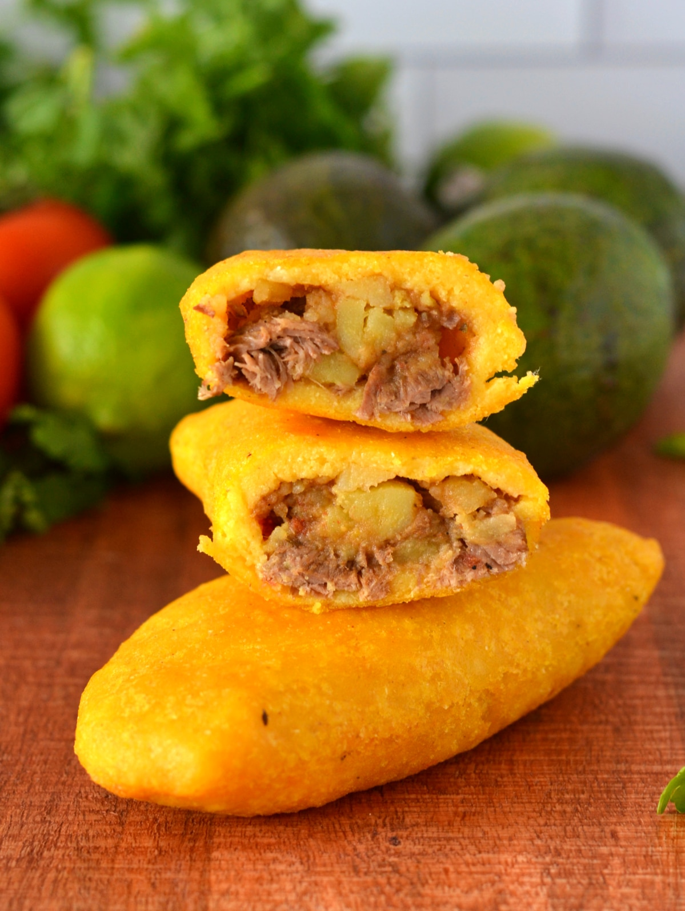

Empanadas

Description
This dish is probably my favorite of all! It can be filled with your choice of shredded beef or chicken. Dealer's choice!
Ingredients
- 2 cups precooked yellow cornmeal (masarepa)
- 3 cups hot water (almost boiling)
- 1 tablespoon sazon goya with azafran (3 packets) (optional)
- 1/2 teaspoon salt
- 2 cups white potatoes, peeled and cut into very small dice
- 1 chicken bouillon cubes (Vegeta)
- 1 tablespoon olive oil
- 1/2 cup white onion, chopped
- 1 cup chopped tomato
- 1/4 cup green onion, chopped
- 1 garlic clove, minced
- 2 tablespoons fresh cilantro, chopped
- 2 tablespoons red bell peppers, chopped
- 1 lb ground bee
- 1 tablespoon cumin
- 1 teaspoon sazon goya
- oil for deep frying
Steps
- Measure the masarepa into a large bowl, add the sazon, if using, and salt and mix well; add the water and mix to form a dough (it will be a little wet and rubbery); let stand while filling is prepared.
- Meanwhile, cook the potatoes with water and the bouillon until tender, about 10 minutes; drain, mash slightly and set aside.
- In a large, heavy skillet, heat 1 tablespoon oil; add onion, tomatoes, green onions, garlic, bell pepper, and cilantro.
- Cook, stirring occasionally until tomatoes break down, about 15 minutes.
- Add ground beef, season with salt, pepper, cumin, and sazon; cook, breaking up with a wooden spoon, until browned and fairly dry
- Stir in potatoes and mix well.
- Heat oil (at least 2 inches) over medium high heat.
- Break off golf ball sized sections of dough (1.5 oz) and roll in your hands into a ball; place between plastic wrap and flatten with the heel of your palm into a 6 inch disc.
- Peel away plastic from top only and scoop plastic and disc into your palm; place a heaping tablespoon of filling in center then fold disc and pinch closed; slightly flatten to distribute filling.
- With a slotted spoon, gently lower empanada into hot oil and cook 2 minutes, turning about halfway through (you'll need to cook in batches); drain on paper toweling.
- Serve warm or at room temperature with recipe Aji (recipe #377331) or Avocado Sauce (recipe #411639) and/or lime wedges.